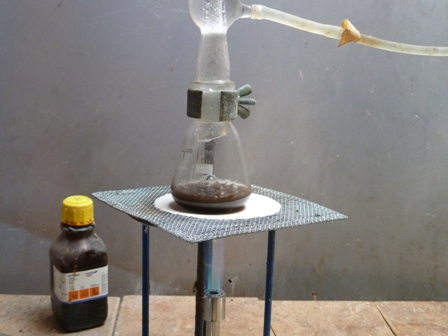
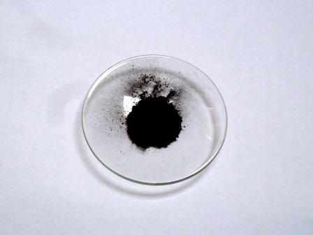

Nel precedente articolo sullo xeroformio (tribromofenato di bismuto), accennavo al futuro tentativo di preparare una minima quantità di quell'interessante composto analitico, o meglio ex analitico, che è il bismutato di sodio, NaBiO3.
Interessante perchè questo composto ha un potere ossidante tanto forte (qui il bismuto ha numero di ossidazione 5, pot. st. rid. E° = 1,70 V) da riuscire a ossidare lo ione manganese Mn2+ a ione permanganato MnO4-, notoriamente a sua volta uno degli ossidanti più energici.
Per battere un forte naturalmente ci deve essere uno ancora più forte!
Dopo aver preparato l'ossido di bismuto (ved.) per arroventamento del tribromofenato, ho cercato in quelle vecchie fonti insostituibili una procedura per la preparazione dei bismutati alcalini.
[Cosa faremmo noi chimici sperimentali ruspanti (categoria umana che si avvia verso l'estinzione) senza quegli storici libri come il Vogel, il Molinari, il Brauer, il Treadwell, il Gattermann... eccetera? Probabilmente non saremmo nemmeno mai esistiti. Per questo considero questi libri fonti bibliografiche di valore inestimabile].
Una possibile procedura per il NaBiO3 la si trova sul Brauer, ed è quella che ho cercato di seguire, fatte salve le diverse proporzioni.
Volevo preparare per mia curiosità solo quella minima quantità di bismutato per eseguire qualche saggio sul manganese.
Materiali occorrenti:
-ossido di bismuto, Bi2O3
-idrossido di sodio, NaOH
-bromo, Br
La procedura, coinvolgendo quanto sopra, non è certo "friendly" e presuppone di lavorare assolutamente di conseguenza... ma su questo punto non insisto più di tanto.
Come il solito si sappia bene quello che si fa, in questo caso a maggior ragione.
La reazione su cui si basa la procedura è la seguente e sfrutta l'ipobromito che si forma in situ:
Bi2O3 + 6 NaOH + 2 Br2 = 2 NaBiO3 + 4 NaBr + 3 H2O
-Sospendere 1,7 g di Bi2O3 in 15 ml di NaOH al 40% e agitando vigorosamente aggiungere goccia goccia 3 g di bromo e portare all'ebollizione.
Date le modeste quantità in gioco e la tendenza del bromo ad evaporare facilmente dall'ambiente di rezione (e a trasferirsi nell'ambiente circostante...!!) ne ho usato un eccesso, un paio di ml (d. 3,1).

Si forma subito un precipitato bruno, che va filtrato e lavato con NaOH al 40% e sospeso in 30 ml di acqua.
Il Brauer dice che mescolando la sospensione e aspettando un certo tempo il colore passa dal bruno al giallo; questo da me non è successo, il precipitato è sempre rimasto bruno scuro.
Lasciar depositare il prodotto, filtrare, diluirlo in 15 ml di NaOH al 53% (chissà poi perchè proprio al 53%!) e portare a riflusso per mezz'ora.

Il precipitato bruno (sempre bruno) risultante è decantato, filtrato e ancora lavato con NaOH al 50%.
Sospenderlo poi in 30 ml di acqua, mescolando; in tale fase dovrebbe riassumere colorazione giallastra, cosa che nemmeno stavolta si è verificata.
Lavare con acqua, visto che il prodotto è uno di quei rarissimi sali di sodio insolubili, ed asciugare.

La resa dovrebbe essere dell'83% secondo il Brauer, nel mio caso si è fermata al 56%; lavorando così in piccolo mi ritengo comunque soddisfatto.
Il bismutato di sodio dovrebbe presentarsi come una polvere amorfa di colore dal giallastro al bruno, mediamente con 3,5 molecole di acqua di cristallizzazione.
Se il prodotto commerciale si trova all'85% di purezza, nel mio caso è sicuramente molto inferiore e si tratta di una miscela quantitativamente indefinita di Bi2O3, Bi2O4, NaBiO3 di colore bruno scuro, simile a quella sostanza che una volta era detta "ossido pulce" (che bel nome! E qui non dico cos'è!).
La prossima volta vedremo lo scopo di questa preparazione, ovvero il test col manganese, e si verificherà se la mia polveraccia scura avrà la bella forza di ossidare il Mn2+ a MnO4-